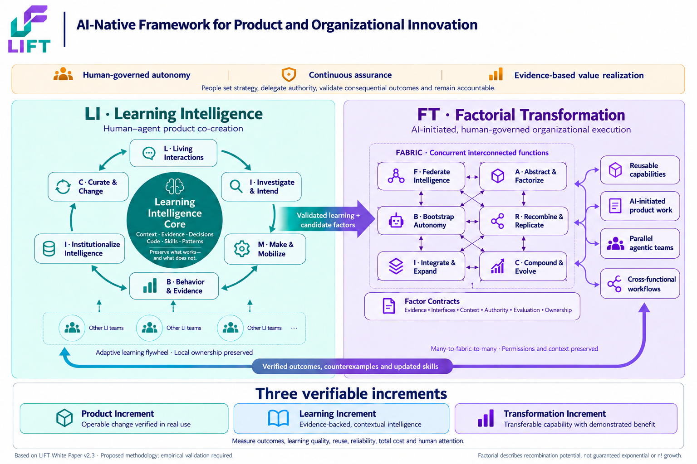

Learning Intelligence
People and agents discover, build and evaluate products together. The Learning Intelligence Core preserves evidence, decisions and reusable skills for future work.
LIFT Global Institute
LIFT helps people and AI agents turn product experiments into verified learning, then put that learning to work across teams under clear human authority.
01 / LIFT Framework
LIFT connects two capabilities. Teams learn from evidence in their own context, then share what other teams can validate and use.
People and agents discover, build and evaluate products together. The Learning Intelligence Core preserves evidence, decisions and reusable skills for future work.
Teams connect verified learning and combine reusable capabilities. Agents can initiate authorized work across teams while people set direction and approve consequential decisions.

LIFT is a proposed operating model designed to complement product discovery, Agile, DevOps, FDE and enterprise governance. Its effectiveness is subject to empirical validation.
02 / Learning & Certification
Both programs run for two days and assess individual evidence and judgment. Choose the track that matches the work you lead.
Build and evaluate NorthStar, a simulated customer-service system. Practice discovery, retrieval, tool integration, safeguards and recovery, then define a candidate capability for reuse.
Recognizes delivery competence demonstrated in a supervised classroom environment.
Use a multi-unit simulation to assess readiness, federate intelligence, define delegated authority and guide adoption across functions. Apply all six FABRIC functions to investment and operating decisions.
Recognizes transformation judgment and operating-model design demonstrated in simulation.
03 / About
We develop and teach LIFT to help product teams and enterprise leaders build trustworthy AI workflows, retain what they learn and apply that knowledge across their organizations. Our certification programs use vendor-neutral cases and individually assessed evidence.